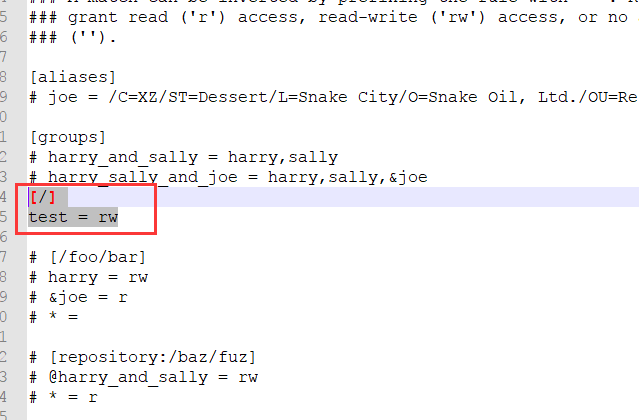
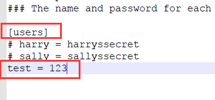
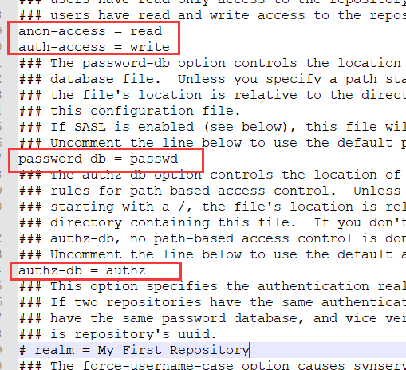
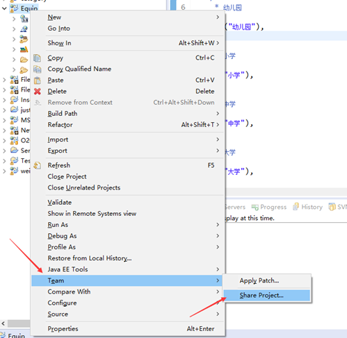
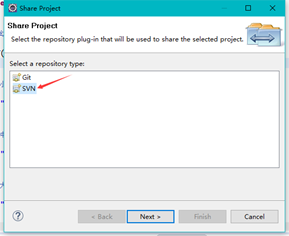
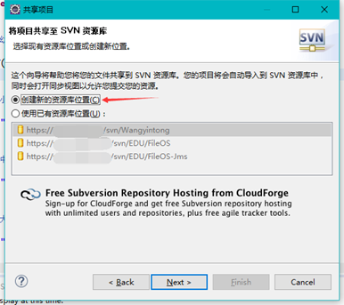
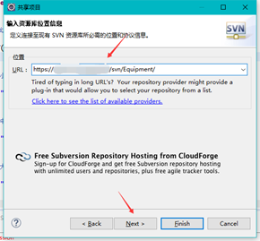
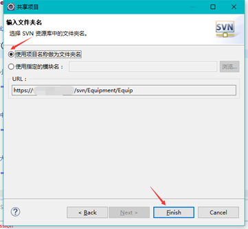
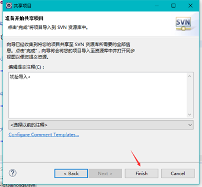

SVN版本管理搭建
参考：百度
制作人：小邹[yw_forgit@163.com]
也是成功搭建过，但是后来改为用Git，故SVN就没有一步步操作记录下来，本教程，很粗糙。
|
// 安装svn yum install subversion // 进入home目录 cd /home // 创建版本库，svn的数据以及配置就会在/home/svnProject/这个目录， svnadmin create svnProject [root@localhost
home]# cd svnProject/ [root@localhost
svnProject]# ll total 8 // 权限配置等放conf drwxr-xr-x. 2 root root
54 Jan 25 01:37 conf // 版本控制文件等放db drwxr-sr-x. 6 root root 253 Jan 25 01:52 db -r--r--r--. 1 root root
2 Jan 25 01:37 format drwxr-xr-x. 2 root root 231 Jan 25 01:37 hooks drwxr-xr-x. 2 root root
41 Jan 25 01:37 locks -rw-r--r--. 1 root root 229 Jan 25 01:37 README.txt [root@localhost
svnProject]# cd conf/ [root@localhost
conf]# ll total 12 // 权限控制文件 -rw-r--r--. 1 root root 2236 Jan 25 01:51 authz // 账号密码文件 -rw-r--r--. 1 root root 1432 Jan 25 01:51 passwd -rw-r--r--. 1 root root 3082 Jan 25 01:40 svnserve.conf |
带#都是注释，只是提供一种模板而已，只要看红色的就行，表示根目录下，test用户可读可写。

同样看红色部分，表示用户test的密码是123

默认红色部分是被注释的，要打开。

|
// 匿名用户可读，您也可以设置anon-access
=没有，允许匿名用户访问。设置为无，可以使日志日期正常显示 anon-access = read // 授权用户可写 auth-access = write // 使用哪个文件作为账号文件 password-db = passwd // 使用哪个文件作为权限文件 authz-db = authz // 认证空间名，版本库所在目录，我这里注释掉，试了也是可以的，可能这样目录就不行我创建的svnProject了吗？ realm = My First Repository |
// 启动svn版本库
svnserve -d -r /home/svnProject
这个就是svn根目录了 svn://192.168.0.21/
// 如果发现不能访问，可能是防火墙的问题，svn默认使用3690端口
// centos7 永久开放3690
firewall-cmd --zone=public --add-port=3690/tcp --permanent
// 重新load一下
firewall-cmd --reload
右键


图是网上，新建也好，已有也好，看需要

URL填写 svn://192.168.0.21/ ，项目的目录这里可以不用加，如果项目还有分层的话，可以加分层的目录，项目名称，后面有。

项目名称就是目录名称，上面说URL不用加项目名称的原因

完成

第一次用svn会有弹框输入用户名、密码，输入就好了。